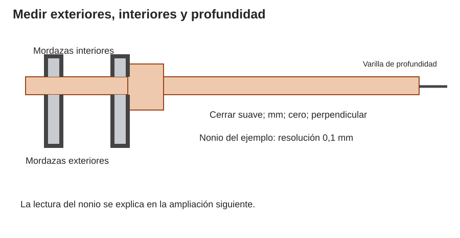
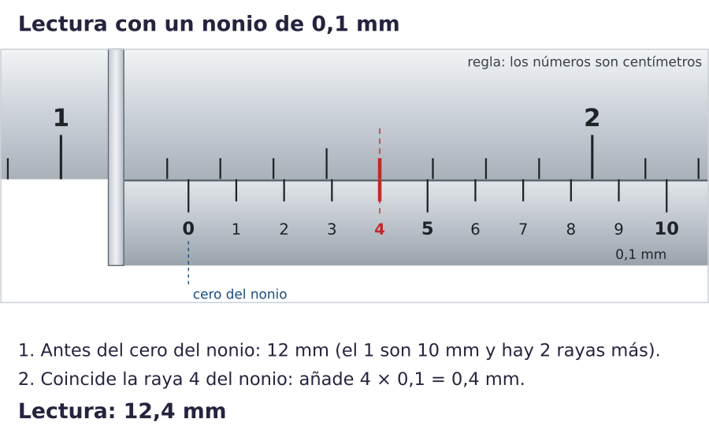
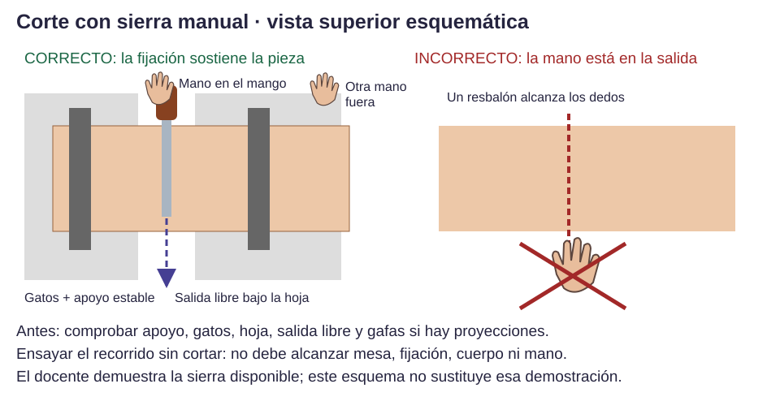
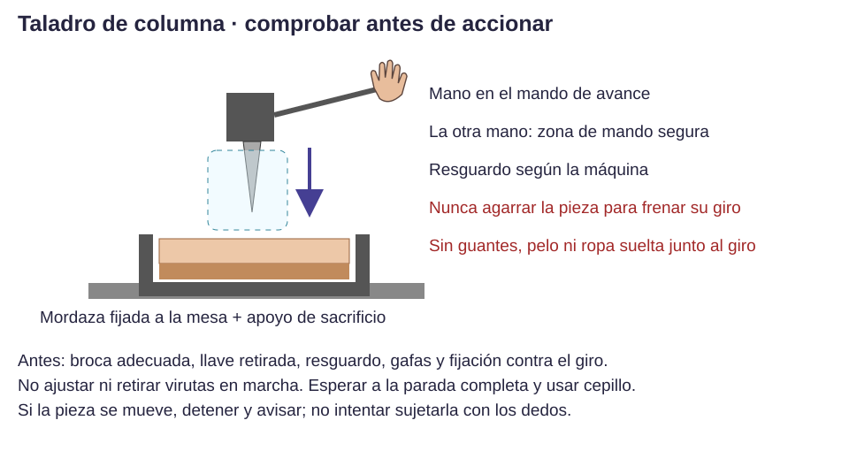
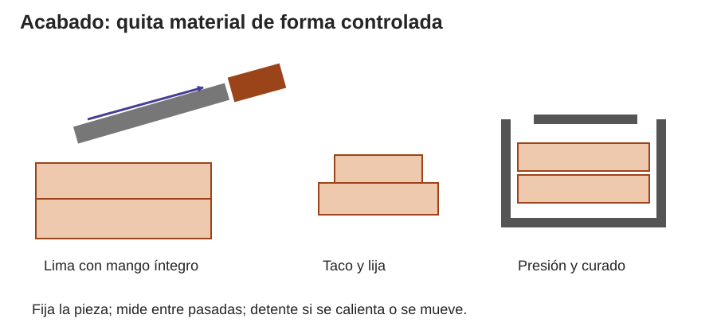

Contenido
Aprender una operación antes de fabricar
Una buena medida no compensa una mala sujeción. Cada práctica empieza con demostración docente, recorrido de la herramienta en vacío y comprobación del puesto. Practicarás primero en un retal sin función estructural. Sólo después pasarás a tu pieza.
Medir con el calibre
El calibre compara una distancia con una escala. Las mordazas grandes miden exteriores; las pequeñas, interiores; la varilla mide profundidad. La resolución de la pantalla no garantiza esa misma exactitud.
- Con la pieza quieta y sin rebabas sueltas, limpia suavemente las caras de medida. Cierra el calibre sin apretar y comprueba el cero; en uno digital, comprueba también mm, no pulgadas.
- Para espesor o ancho, abre las mordazas grandes, sitúa la pieza entre sus caras y cierra hasta contacto suave. Mantén la medida perpendicular: no midas en diagonal.
- Lee y anota el valor y la unidad. Repite en tres posiciones; registra variación sin inventar decimales.
- Para un interior, usa las mordazas pequeñas y busca la dimensión entre caras opuestas; para profundidad, apoya el extremo de la regla en el borde y desliza la varilla hasta el fondo.
- En el calibre con nonio, lee los milímetros completos antes del cero móvil y añade la división del nonio que coincide multiplicada por su resolución. En el ejemplo de resolución 0,1 mm: 12 mm + división 4 × 0,1 = 12,4 mm.
Resultado esperado: Tabla de tres medidas y una decisión de ajuste.
Comprueba: Repite una medida tras retirar y recolocar el instrumento. Explica qué mordazas o varilla has usado.
Error frecuente: Apretar deforma cartón o plástico flexible; medir torcido aumenta la lectura. No ajustes una pieza sólo porque una lectura aislada difiera.

Piensa y comprueba. Mides un espesor con el calibre inclinado y obtienes más que con la regla perpendicular. ¿Qué harías antes de lijar?
Ver explicación
Repetir la medida perpendicular, comprobar cero, unidad y presión; no quitar material a partir de una medida dudosa.

Marcar y cortar un retal
La línea guía la herramienta; la fijación evita que la pieza cambie de posición. El ancho del corte elimina material: deja la línea en la pieza útil para acabar después.
- Mide dos veces desde el mismo borde de referencia. Traza con lápiz fino y escuadra; señala qué lado es desperdicio.
- Apoya y fija el retal; deja libre la trayectoria y comprueba que no se cortará la mesa ni el gato. Haz el recorrido en vacío con la herramienta parada.
- Con la sierra demostrada, inicia despacio y sin forzar; el sentido que corta depende de la hoja y cómo se monte. Mantén dedos fuera del recorrido y de la salida.
- Para cartón, sólo si se autoriza cúter: base de corte, guía metálica protegida y material fijado; hoja corta, varias pasadas suaves alejándose del cuerpo. Guarda la hoja al terminar.
- Con herramienta parada, comprueba dimensiones y escuadra. Acaba el borde con el sistema demostrado.
Resultado esperado: Un retal cortado sin movimiento inesperado y con dimensiones comprobables.
Comprueba: Sujeción estable, manos fuera del recorrido y medida final.
Error frecuente: Cortar hacia la mano que mantiene la regla o sujetar una pieza de madera con la mano libre.

Taladrar con supervisión
La broca puede arrastrar la pieza y hacerla girar. La mordaza impide ese giro; el apoyo bajo la salida reduce el astillado.
- Marca el centro; muestra al docente el material y el diámetro pedido. Él verifica broca, fijación, resguardo y velocidad adecuada.
- Fija pieza y apoyo en mordaza/gato de forma que no puedan girar; gafas puestas, llave retirada, sin guantes ni elementos sueltos. Prueba el recorrido con la máquina parada.
- Con autorización, acciona el mando y baja de forma controlada, sin forzar. Las manos permanecen en los mandos previstos, fuera de la broca y pieza.
- Detén la máquina, espera a que pare por completo y sigue la indicación docente para retirar la pieza. Comprueba posición y diámetro; limpia con cepillo.
Resultado esperado: Agujero situado según el plano, sin giro de la pieza ni daños en el borde.
Comprueba: Centro medido respecto a los bordes, paso del elemento previsto y ausencia de grietas.
Error frecuente: Intentar evitar el giro agarrando la pieza con la mano. Si se mueve, hay que detener y revisar la sujeción.

Limar, lijar y unir
El acabado quita material poco a poco. Una unión se prepara y se comprueba antes de cargarla.
- Fija la pieza. Usa lima con mango íntegro; el docente muestra la dirección de corte de esa lima. Mantén las manos en el mango y zona de apoyo indicada, sin espiga descubierta.
- Lija con taco y el grano adecuado al defecto: prueba primero en un retal; cambia a más fino cuando desaparezcan las marcas anteriores. No calientes el PLA ni produzcas polvo innecesario.
- Prueba el encaje sin forzar y mide. Si falta espacio, identifica dónde roza antes de quitar material; si sobra demasiado, revisa dimensiones y rediseña.
- En tornillería, comprueba paso, acceso y apriete sin dañar el material. En cola para madera, prepara caras, cantidad, presión y tiempo según la etiqueta del adhesivo; no hay un tiempo universal de 20 minutos.
- Comprueba unión y acabado cuando haya transcurrido el curado indicado. No hagas un ensayo de carga sobre una unión recién pegada.
Resultado esperado: Superficies sin aristas peligrosas, ajuste documentado y unión preparada para su prueba.
Comprueba: Registra material retirado, medidas y funcionamiento antes/después.
Error frecuente: Eliminar una pared o debilitar una esquina para corregir un encaje sin volver a medir.

Antes de tocar una herramienta
Trabaja sólo con autorización y demostración del docente, sobre los materiales previstos. Recoge pelo y ropa suelta, retira objetos colgantes, despeja el puesto y localiza salida y botiquín. El docente comprueba herramienta, resguardo, sujeción y protección necesaria. Si no puedes explicar la trayectoria y dónde estarán tus manos, no empieces.
Reglas comunes de operación
- Para cortar, taladrar, limar o retirar soportes, la pieza se fija con un sistema apropiado: gato, mordaza o tornillo de banco y apoyo. No se sustituye por sujetarla a mano. En cartón, el docente adapta la fijación para no aplastarlo.
- La mano libre queda fuera de la trayectoria y de su posible continuación si resbala la herramienta. «Detrás del filo» no basta si se cruza la trayectoria.
- Usa gafas en operaciones con proyecciones. El polvo se controla con extracción o el procedimiento indicado: no improvises una mascarilla como sustituto de controlar el polvo. No se lija DM en esta práctica de iniciación.
- Taladro: pieza fijada, broca y resguardo revisados, llave de portabrocas retirada. Sin guantes, pelo ni ropa que puedan engancharse en partes giratorias. Ajustes y retirada de virutas sólo con la máquina parada.
- Impresora: manos fuera de partes calientes o móviles; operación y retirada sólo bajo supervisión. Espera el enfriamiento y utiliza el método de retirada indicado para esa bandeja; no presupongas que siempre se usa espátula.
- Si algo se mueve, se atasca, vibra, se calienta de forma anómala o se rompe: detén la operación y avisa. No improvises reparaciones ni retires un atasco con la máquina funcionando.
- Limpia con cepillo y recogedor o extracción adecuada, nunca soplando ni recogiendo virutas con la mano. Separa residuos según la recogida real del centro.
Si ocurre un incidente
Detén la actividad, avisa inmediatamente al docente y sigue el protocolo del centro. El adulto organiza la atención y pide ayuda sanitaria; ante una emergencia, 112. No continúes trabajando ni ocultes una lesión.
- Quemadura térmica: enfriar la zona con agua corriente fresca durante 20 minutos. No hielo, cremas ni reventar ampollas; no arrancar ropa adherida. El docente valora la atención sanitaria y mantiene abrigado el resto del cuerpo.
- Corte: el adulto atiende con material limpio; presión directa sobre la herida si no hay objeto incrustado. No retirar objetos clavados. Sangrado intenso o que no cede requiere ayuda urgente.
- Partícula en el ojo: no frotar ni intentar sacar un objeto incrustado; avisar al docente. No manipular el ojo. Una proyección a alta velocidad, perforación, cambio de visión o dolor intenso requiere atención sanitaria urgente.
- Humo, chispas u olor a quemado: aléjate, avisa y sigue la evacuación indicada. No toques cables, máquinas ni extintores por tu cuenta.
Pautas contrastadas con NHS: cortes, NHS: lesiones oculares y NHS: Burns and scalds. Estas instrucciones de alumnado acompañan la actuación del adulto; la organización concreta de emergencias se explica en el taller antes de empezar.
Verdadero o falso
Normas del taller: verdadero o falso.
00:00: